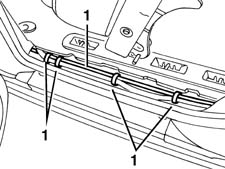
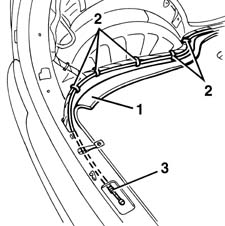

7015B44 tail gate catch control cable - r+r
- Path
- Procedures > 70 FITTINGS > 7015 TAILGATE/FLAP > 7015B TAILGATE LOCKING/OPENING DEVICES > 7015B44 tail gate catch control cable - r+r
- Kind
- repair procedure (removal / refitting; the operation number is the code)
- Applies to
- all engines; all production periods
- Interactive page
- https://sloeber94.github.io/elrnDB-fMltpl/en/#/2892125
Applies to: all engines; all production periods
 Removing
Removing
 Refitting
Refitting3380A44 handbrake/linkage protection - r+r
7040L40 REAR COMPARTMENT SCUFF STRIP - R R (left side)
7015B34 lock block - r+r with handle or support removed
7040B22 luggage compartment/load platform moulding - r+r
7040H42 rear pillar trim - r r (left side)
7040G40 load compartment light bulb holder - r r
7040B18 L/H OR R/H SIDE TRIM (ONE) OF LUGGAGE COMPARTMENT/LOAD PLATFORM - ARRANGE
7015B18 TAILGATE LOCK STRIKER - R+R
1. Release the transmission cable from the retaining clips along the left side panel.

Applies to: all engines; all production periods
1. Lift the edge of the carpet.
2. Release the transmission cable from the retaining clips in the load compartment.
3. Remove the transmission cable from the car.

Applies to: all engines; all production periods
Refitting
RemovingCheck that the transmission cable is undamaged.
Refit the transmission cable in its seating in the car.
Secure the transmission cable with its retaining clips, in the load compartment, then refit the carpet.
Secure the cable with the retaining clips along the left side panel.
7015B18 TAILGATE LOCK STRIKER - R+R
7040B18 L/H OR R/H SIDE TRIM (ONE) OF LUGGAGE COMPARTMENT/LOAD PLATFORM - ARRANGE
7040G40 load compartment light bulb holder - r r
7040H42 rear pillar trim - r r (left side)
7040B22 luggage compartment/load platform moulding - r+r
7015B34 lock block - r+r with handle or support removed
7040L40 REAR COMPARTMENT SCUFF STRIP - R R (left side)
3380A44 handbrake/linkage protection - r+r
Check that the opening control works properly.
Topics linked from this page (8)
- 3380A44 handbrake/linkage protection - r+r
- 7015B18 TAILGATE LOCK STRIKER - R+R
- 7015B34 lock block - r+r with handle or support removed
- 7040B18 L/H OR R/H SIDE TRIM (ONE) OF LUGGAGE COMPARTMENT/LOAD PLATFORM - ARRANGE
- 7040B22 luggage compartment/load platform moulding - r+r
- 7040G40 load compartment light bulb holder - r r
- 7040H42 rear pillar trim - r r
- 7040L40 REAR COMPARTMENT SCUFF STRIP - R R